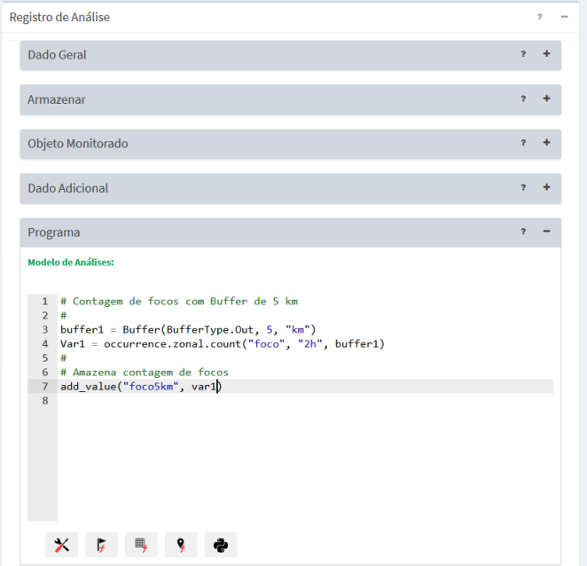

Objeto Monitorado
A Figura 3.7 mostra a área de trabalho de Análises utilizada para se definir uma análise baseada em objetos monitorados. Descrevemos a seguir cada um dos campos dessa interface.

Figura 3.7 – Módulo de Administração: Análise com base em objeto monitorado.
Registro de Análise – Dado Geral:
- Nome: Defina o nome da análise (campo obrigatório). O tamanho máximo do nome é de 100 caracteres. Não é permitido nomes duplicados.
- Tipo: Escolha o tipo “Objeto Monitorado”. As opções “Grade” e “PCD” estão nos itens correspondentes. IMPORTANTE: Após salvar a análise o tipo não poderá ser alterado.
- Descrição: Campo não obrigatório para descrição da análise. O tamanho máximo do texto é de 250 caracteres.
- Serviço: Escolha o serviço de análise que estará associado a cada análise. Se necessário adicionar novos serviços de análise (local ou remoto) consulte.
- Ativo: Botão ativo executará a análise de acordo com a programação (ver abaixo) definida para a análise. Se o botão estiver desmarcado a análise não será executada. Uma análise que não esteja ativa poderá ser executada apenas manualmente pelo botão “„ Executar” disponível na lista de análises da área de trabalho.
Registro de Análise – Armazenar
Utilize os parâmetros desta seção para definir o local de armazenamento dos dados. No caso de uma análise baseada em objeto monitorado, será solicitado o nome de uma tabela de banco de dados.
- Formato de saída: Para este tipo de análise apenas a opção “Resultado de análise com Objeto Monitorado” encontra-se disponível. Atenção: após salvar a análise o formato de saída não poderá ser alterado.
- Nome da tabela: Digite o nome da tabela a ser criada para armazenar os resultados. Esta tabela terá um relacionamento de “n” para “1” com a tabela do dado estático (ou objeto monitorado). Em outras palavras, toda vez que a análise for executada serão armazenados a data/hora e resultados dos cálculos para cada objeto monitorado.
Registro de Análise – Armazenar - Agendamento
Nesta seção o usuário deve definir quando será executada a análise.
- Tipo: Escolha tipo “Manual”, “Agendamento”, “Reprocessamento de dados históricos”, ou “Automático”. Se Manual a execução da análise só será realizada se o usuário utilizar o botão
Executar no item da lista de análises que desejar, ou ainda em “Salvar e executar” da análise aberta. Se “Agendamento” ou “Reprocessamento de dados históricos” preencha os campos abaixo. Se “Automático” dependerá da chegada de qualquer dos dados dinâmicos que uma análise utilizar.
- Data Inicial
 (somente se Tipo for “Reprocessamento de dados históricos”): Clique no campo para escolher a data e hora que será utilizada para início do reprocessamento.
(somente se Tipo for “Reprocessamento de dados históricos”): Clique no campo para escolher a data e hora que será utilizada para início do reprocessamento. - Data Final (somente se Tipo for “Reprocessamento de dados históricos”): Clique no campo para escolher a data e hora que será utilizada para fim do reprocessamento.
- Unidade de tempo: Escolha um item entre “Segundos, Minutos, Horas e Semanalmente”.
- Frequência (somente se Unidade de tempo for Segundos, Minutos, Horas): Digite um valor de um número inteiro.
- Tempo Inicial (somente se Unidade de tempo for Segundos, Minutos, Horas): Clique no campo para escolher o valor de hora, minuto e segundo que será utilizado como referência para executar a análise.
- Agendamento (somente se Unidade de tempo for Semanalmente): escolha uma das opções entre “Domingo, Segunda-feira, Terça-feira, Quarta-feira, Quinta-Feira, Sexta-feira e Sábado”
- Hora (somente se Unidade de tempo for Semanalmente): clique no campo para escolher o valor de hora, minuto e segundo que será executada para iniciar a análise.
Registro de Análise – Objeto Monitorado
Nesta seção o usuário deve escolher qual será o objeto monitorado, que corresponde a um dado estático vetorial, com representação geométrica de pontos, linhas ou polígonos, previamente cadastrado.
- Série de Dados: Escolha um dado estático vetorial previamente cadastrado como dado estático. Atenção: após salvar a análise a série de dados não poderá ser alterada.
- Atributo Identificador: Clique no campo e escolha um atributo que será utilizado para identificar os objetos nos relatórios.
Registro de Análise – Dado Adicional
Nesta seção o usuário deve escolher qual ou quais dados estáticos (matriciais somente) ou dinâmicos (PCD, Ocorrência ou Matriz) serão cruzados (ou sobrepostos espacialmente) com as geometrias do objeto monitorado.
- + : Clique no botão para selecionar um dado estático ou dinâmico na janela que será apresentada.
- „ Dado Estático : Clique para abrir a lista de dados estáticos a escolher. Note que uma vez escolhido o mesmo será retirado dessa lista. A lista de dados escolhidos fica disponível na área de trabalho.
- „ Dado Dinâmico : Clique para abrir a lista de dados dinâmicos a escolher. Note que uma vez escolhido o mesmo será retirado dessa lista. A lista de dados escolhidos fica disponível na área de trabalho.
- “Adicionar ”: Inclui o dado na lista.
Após a inclusão de um dado na lista, o campo de pseudônimo pode ser alterado. Use o botão “Remover” para excluir um dado da lista (Figura 3.8).
- Pseudônimo: Ao escolher um dado a lista automaticamente mostra o mesmo conteúdo do nome para o pseudônimo. Clique no campo correspondente que deseja alterar. Nas regras de análise serão estes pseudônimos que deverão ser utilizados pelo operadores.
Figura 3.8 – Módulo de Administração: Análise – Lista de Dados Adicionais
Registro de Análise – Programa
Nesta seção o usuário deve editar o programa de análise. A edição do programa utiliza a linguagem Python e portanto, siga rigorosamente a sintaxe do comando definidos para esta linguagem. Além dos comandos e funções de Python você pode utilizar os utilitários e os operadores zonais criados especialmente para a plataforma TerraMA2.
Para facilitar a edição do programa, botões na parte inferior da janela possibilitam escolher atalhos de alguns itens específicos. Ao escolher um item entre os botões disponíveis, o conteúdo será incluído na posição em que estiver o cursor. Os atalhos disponíveis são:
 - Atalho para os utilitários da plataforma, tais como “buffer” a ser aplicado em geometrias do objeto monitorado, unidades de distância, tempo, “add_value”, “get_value” e “get_analysis_date”.
- Atalho para os utilitários da plataforma, tais como “buffer” a ser aplicado em geometrias do objeto monitorado, unidades de distância, tempo, “add_value”, “get_value” e “get_analysis_date”.
 - Atalho para os atributos do objeto monitorado (ou dado estático vetorial) que foi escolhido para a análise atual. Junto do nome do atributo o utilitário “get_value” será inserido, pois este deve ser utilizado para ser atribuído a uma variável do programa.
- Atalho para os atributos do objeto monitorado (ou dado estático vetorial) que foi escolhido para a análise atual. Junto do nome do atributo o utilitário “get_value” será inserido, pois este deve ser utilizado para ser atribuído a uma variável do programa.
 - Atalho para os operadores que trabalham com dados dinâmicos de PCD. Contém uma lista de operadores que retornam a influência das PCD, agrupados em operadores zonais, zonais históricos e zonais históricos por intervalo.
- Atalho para os operadores que trabalham com dados dinâmicos de PCD. Contém uma lista de operadores que retornam a influência das PCD, agrupados em operadores zonais, zonais históricos e zonais históricos por intervalo.
 - Atalho para os operadores que trabalham com dados dinâmicos de matrizes. Contém uma lista de operadores que utilizam dados de observação e previsão, agrupados em zonais, zonais históricos e zonais de previsão.
- Atalho para os operadores que trabalham com dados dinâmicos de matrizes. Contém uma lista de operadores que utilizam dados de observação e previsão, agrupados em zonais, zonais históricos e zonais de previsão.
 - Atalho para os operadores que trabalham com dados dinâmicos de ocorrências. Contém uma lista de operadores históricos agrupados em zonais, zonais por agregação e zonais por intervalo.
- Atalho para os operadores que trabalham com dados dinâmicos de ocorrências. Contém uma lista de operadores históricos agrupados em zonais, zonais por agregação e zonais por intervalo.
- Atalho para algumas funções, operadores e comandos de Python.
Após editar o programa, poderá utilizar o botão “Validar” para identificar se há erros de sintaxe nos comando, funções e operadores utilizados. O botão “Salvar e executar” grava as últimas alterações e executa a análise mesmo que esta esteja inativa. Se desejar apenas gravar as alterações clique na seta do botão e escolha “Salvar”. Para as análises que estiverem ativas, as próximas execuções seguirão as regras definidas na seção “Agendamento”.
Importante: O programa de análise definido pelo usuário é executado individualmente para cada geometria do objeto monitorado. É obrigatório que o programa faça uso pelo menos uma vez do utilitário “add_value”. Entretanto, este utilitário pode ser utilizado dentro de um comando condicional ( if ) para adicionar valores resultantes da análise somente nos objetos de interesse do usuário.
Created with the Personal Edition of HelpNDoc: Free help authoring tool